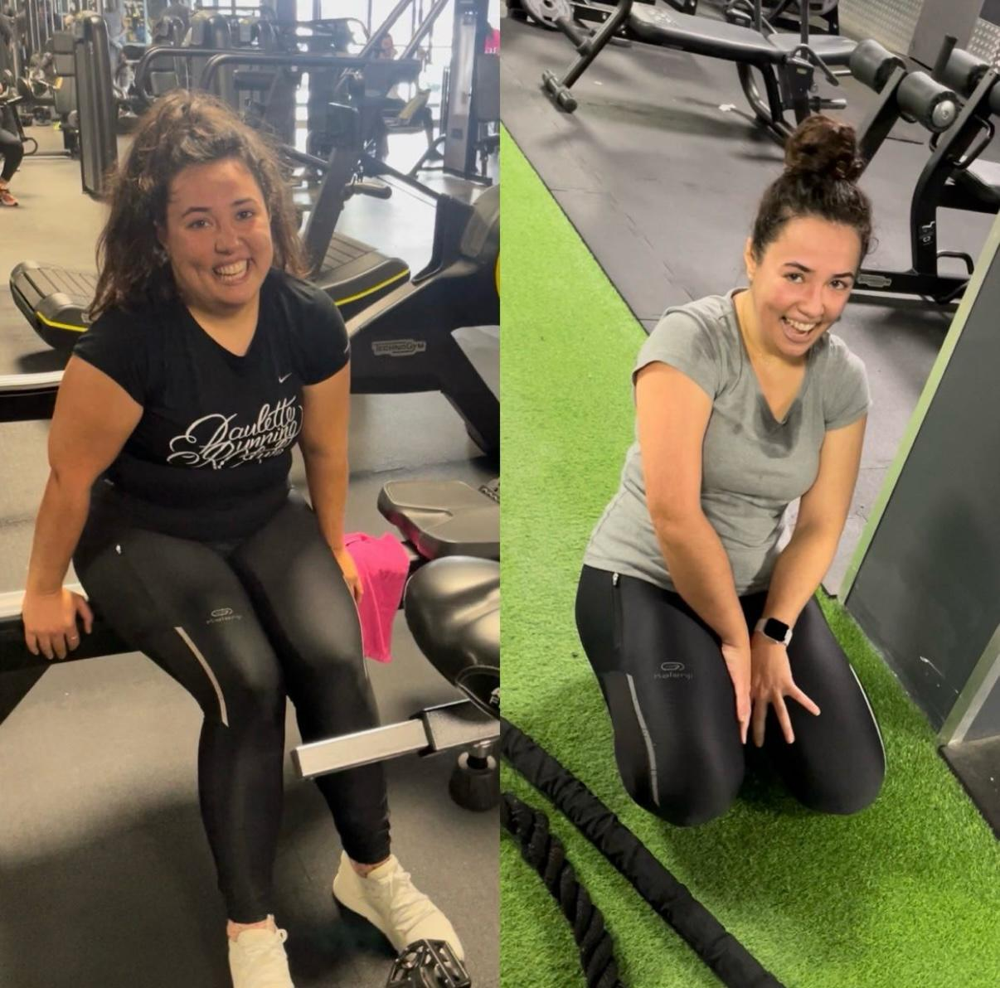
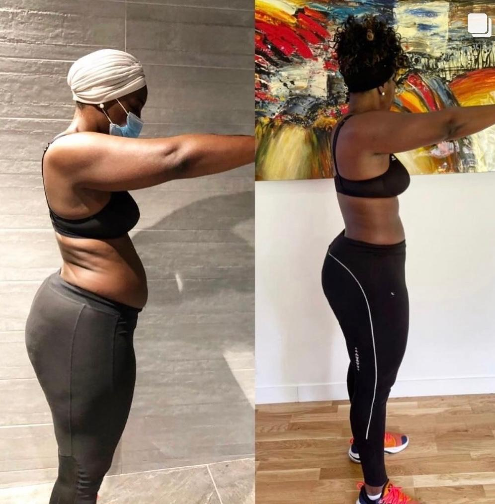
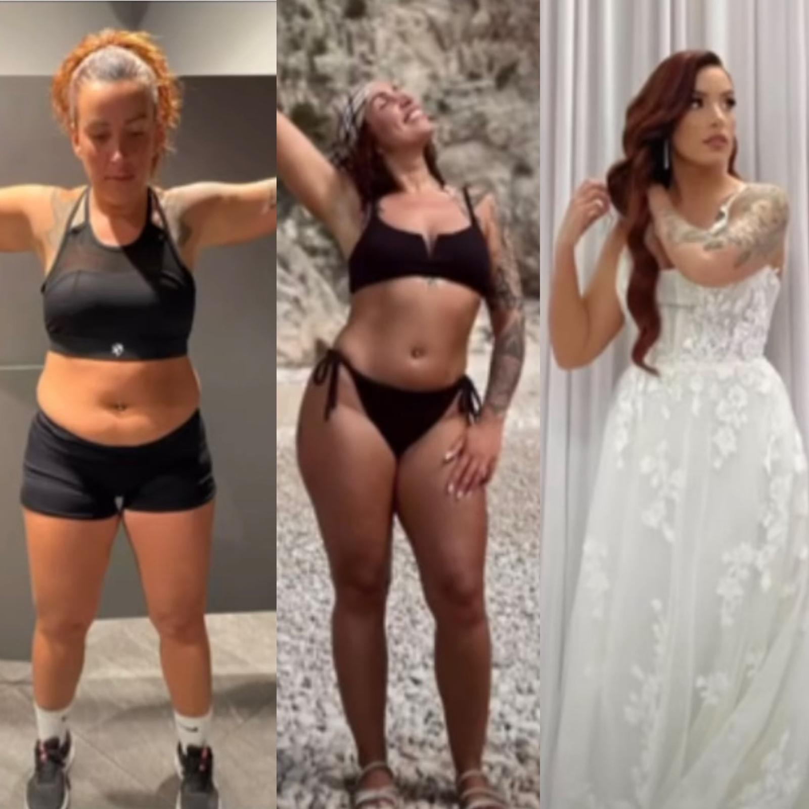
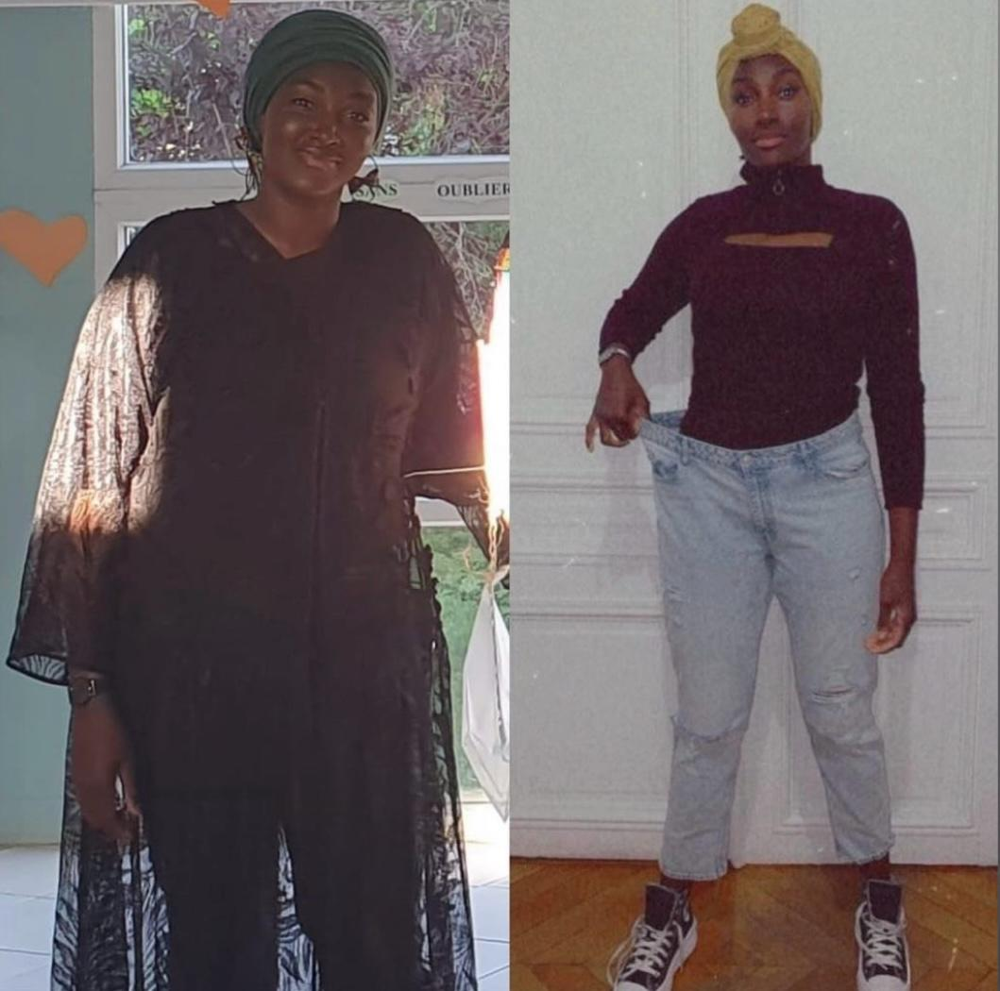
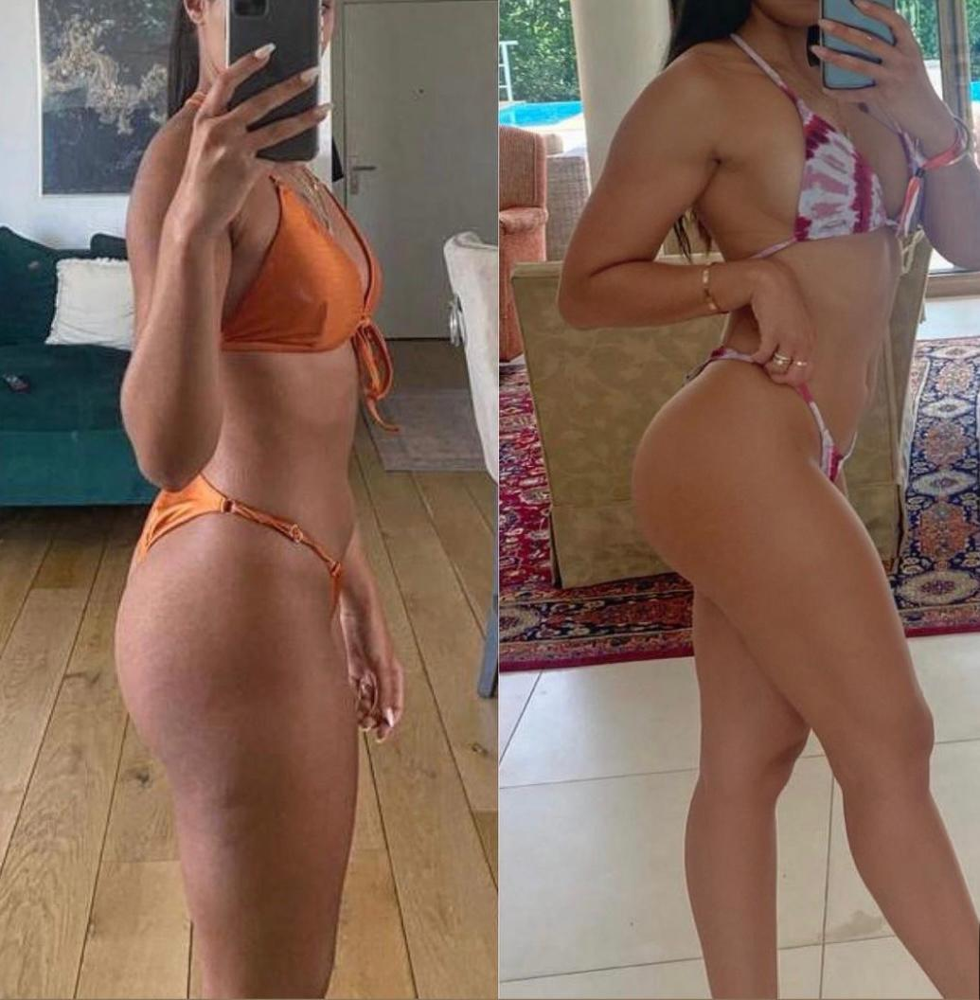
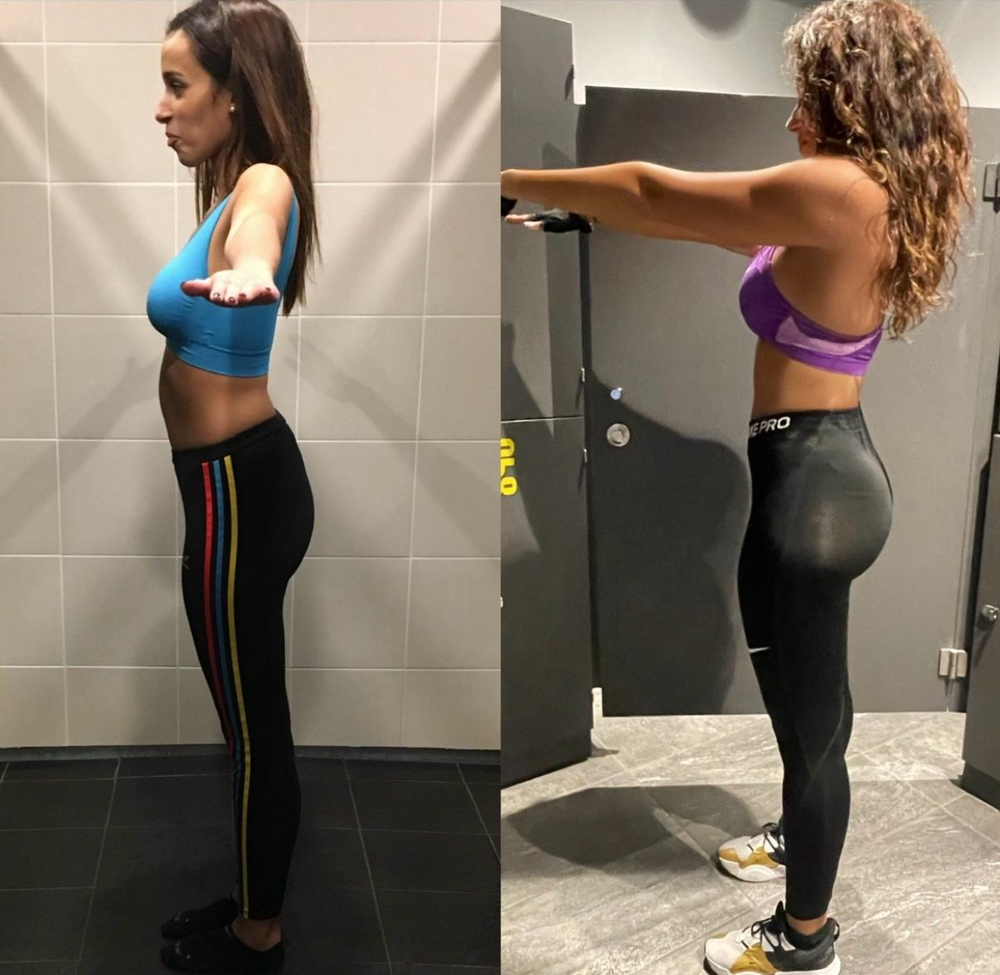
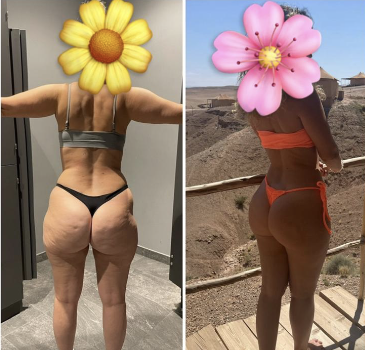
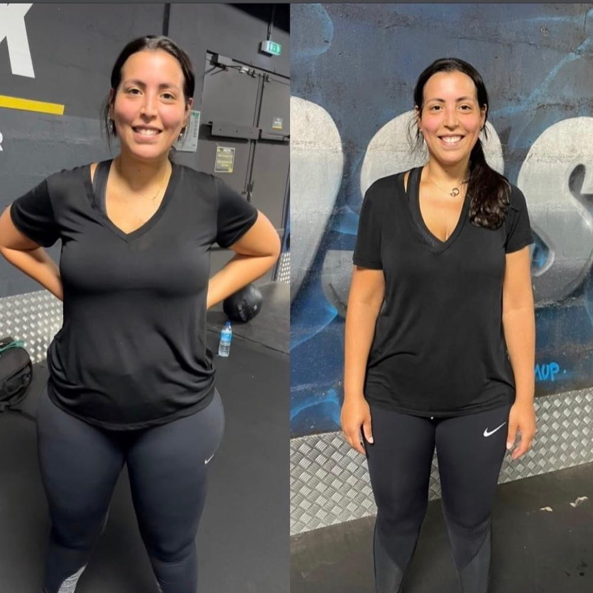

Ce qu'elles en disent.
Voici les retours et les résultats de mes clientes accompagnées en coaching.

« Si vous souhaitez un moteur dans votre vie, foncez avec Joy — ça ne sera pas que du sport, ça sera un mental forgé. En 3 semaines le mental a changé, en 6 semaines déjà -5 kilos sur la balance, en 6 mois des performances doublées, 3 tailles en moins, 10 kilos de gras en moins et beaucoup de muscles en plus. »

« Un grand merci Joy pour ton engagement dans mon projet de perte de poids. Grâce à tes précieux conseils et tes entraînements adaptés, j'ai pu atteindre mon objectif en quelques mois. Il y a un avant et un après Joy. »

« Mon expérience avec toi a été au-delà de toutes mes attentes. Tes entraînements étaient parfaitement cadrés, efficaces et fructueux. En seulement 2 mois, j'ai réalisé une transformation qui a largement dépassé mes attentes. »

« Joy a su être mon soutien pour ma remise en forme avant mon mariage, physiquement et psychologiquement. Le défi était de me transformer en à peine 6 mois — mission accomplie. C'est une coach dévouée qui aime ce qu'elle fait. »

« Depuis que tu m'accompagnes dans mon cheminement, j'ai appris à croire en moi. Aujourd'hui je peux le dire avec fierté : je suis une femme accomplie, et c'est en grande partie grâce à toi, Joy. »

« Le coaching avec Joy, une expérience qui a changé ma vie. J'ai appris qu'au-delà de la perte de poids et de la motivation, il y avait la discipline. Le sport fait désormais partie de mon quotidien. Je recommande Joy à toutes les femmes qui souhaitent changer leur vie. »

« Joy est ma coach depuis 2022 et je ne saurais me passer de son accompagnement. Elle m'a construit un programme personnalisé me permettant d'atteindre mes objectifs de manière progressive et surtout durable — y compris après mon accouchement. »

« Merci pour tout, tu m'as tellement changée. Je détestais le sport, j'avais trop honte pour aller en salle seule. Aujourd'hui je suis fière de mon corps et je suis capable de m'entraîner seule 3 à 4 fois par semaine. »

« Je remercie mille fois Joy ! Elle m'a appris à travailler ma force mentale et à changer mon état d'esprit pour me dépasser. Toujours positive, Joy est aussi très sérieuse dans son travail. »

« Mon objectif était de perdre du poids après deux grossesses et l'arrêt total du sport pendant plus de 4 ans. Joy ne s'arrête pas au coaching : elle partage des conseils sur l'alimentation. Aujourd'hui c'est même devenu une amie. »